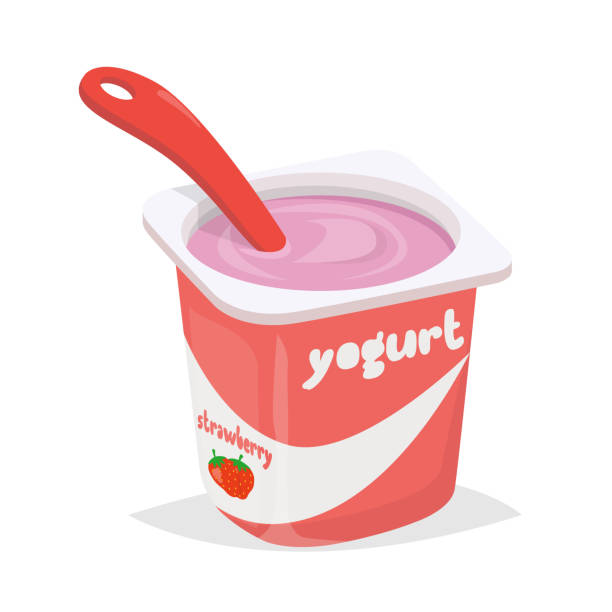

Yogurt Treat

Breakfast can be tricky. You should eat but sometimes you just need those extra 5 minutes of sleep instead. This yogurt can be made
ahead of time and you can grab it out of the fridge as you are running out the door!
This is a versatile recipe and can be crafted however you want by subbing your own favorite yogurt, fruits and granola in.
Ingredients:
- Vanilla Yogurt
- Diced Strawberries
- Granola
- Mason Jar or other container
How to Make:
- Make the initial base of yogurt at the bottom of the container(not all of it!)
- Ontop of the yogurt, add a combination of mostly diced strawberries and a sprinkle of granola.
- Add one more layer of yogurt
- Repeat step 2 to form the top layer!
Enjoy!